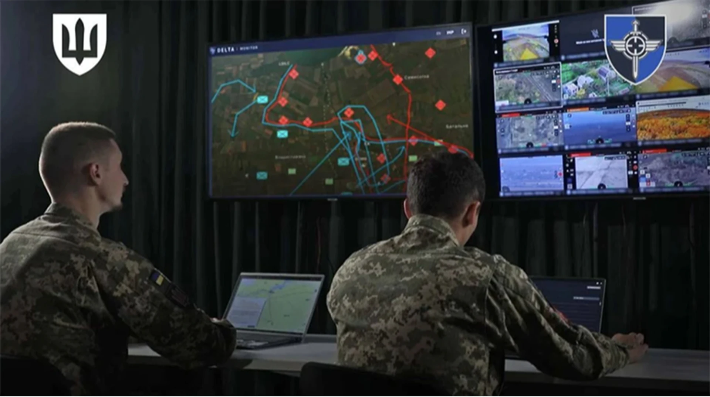

NOTE 13 · UKRAINE
우크라이나 DELTA 지휘통제체계
드론이 많아질수록 정보가 자동으로 좋아질 것 같지만 실제 문제는 반대다. 영상, 좌표, 레이더 표적, 현장 보고가 서로 다른 채널에 쏟아지면 지휘관은 더 많은 화면을 보면서도 전체 상황을 놓칠 수 있다.
우크라이나의 DELTA는 여러 센서와 부대가 가진 정보를 공통 상황도에 모으는 디지털 지휘통제 생태계다. NATO ACT는 2026년 기준 우크라이나 국방 인력 20만 명 이상이 사용한다고 설명한다. 하나의 ‘슈퍼 AI’라기보다 지도, 표적 정보, 영상과 협업 도구를 연결하는 전장 운영체제에 가깝다.

구성 요소는 공통 상황도, 표적과 객체 데이터베이스, 영상 통합, 임무 계획과 보고 도구로 나뉜다. 사용자는 권한에 따라 웹 기반 화면에서 정보를 보고 수정한다. 드론, 레이더, 정찰 보고와 외부 체계의 데이터를 표준 형식으로 연결해야 같은 객체를 중복 등록하는 일을 줄일 수 있다.
가치는 센서의 최고 성능보다 정보가 이동하는 시간을 줄이는 데 있다. 정찰 드론이 본 표적을 다른 부대가 다시 입력하지 않고 공유하고, 바뀐 위치를 같은 그림에서 확인할 수 있다. 반대로 사용자가 많아질수록 접근권한, 데이터 품질, 통신 두절 때의 동기화와 사이버보안이 더 중요해진다.
공통 화면에 표시됐다고 해서 데이터가 정확한 것은 아니다. 보고 시각, 출처, 위치 오차와 신뢰도를 함께 관리해야 한다. 같은 표적을 여러 센서가 관측했을 때 동일 객체인지 판단하고 오래된 정보를 제거하는 데이터 관리가 필요하다.
보안 구조도 중요하다. 계정 탈취나 단말기 분실이 전체 정보 노출로 이어지지 않도록 다단계 인증, 최소 권한, 감사 로그와 세분화된 데이터 접근이 요구된다. 전술 통신이 끊겼다가 복구될 때 충돌 없이 정보를 동기화하는 기능도 현장 사용성에 직접 영향을 준다.
DELTA 사례는 센서 수량을 늘리는 것과 센서 정보를 작전에 연결하는 일이 별개라는 점을 보여준다. 체계의 성능은 지도 화면 자체보다 데이터 표준, 사용자 교육, 네트워크 복원력과 정보 검증 절차에 좌우된다.